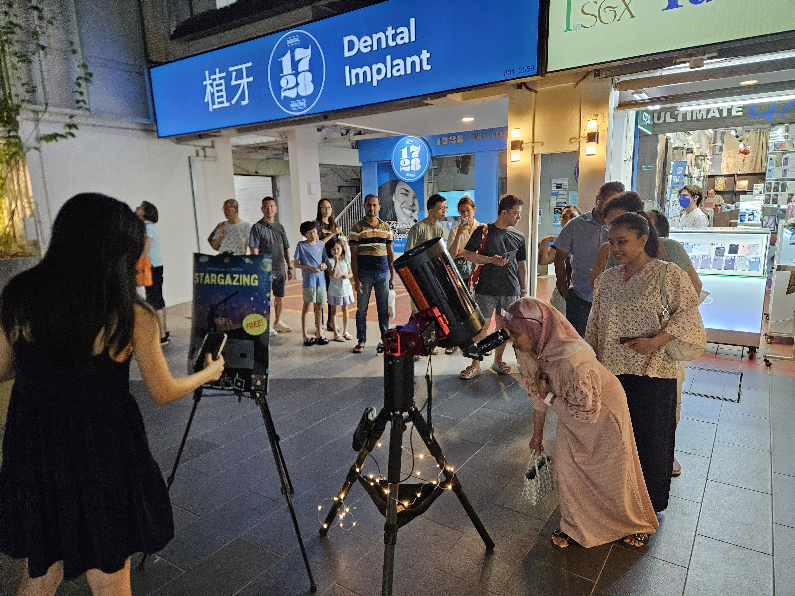
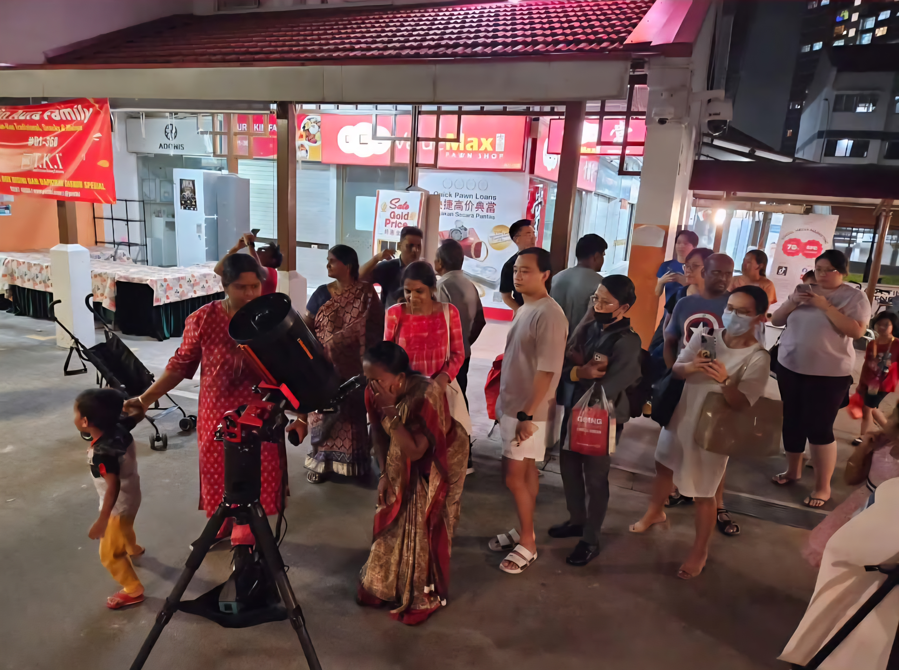
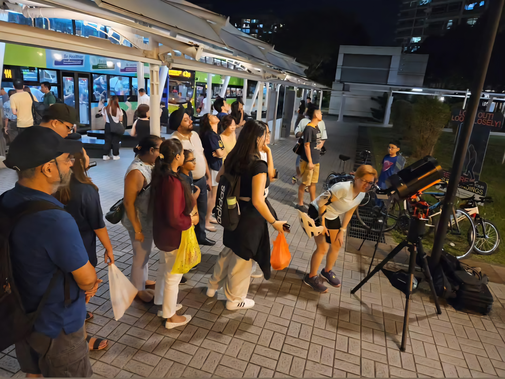
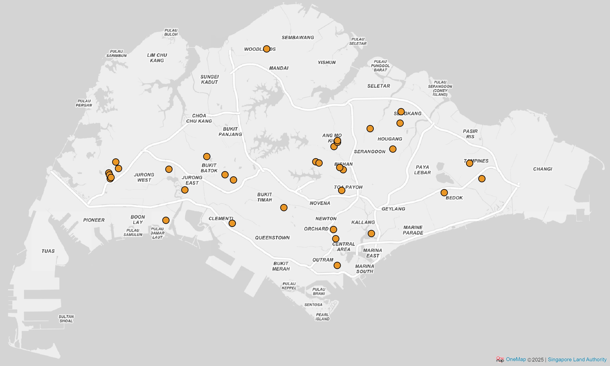

Astrophaella began as a way to share the wonder of the night sky with people from all over Singapore through hands-on astronomy experiences. As of 2025, over a hundred stargazing sessions at more than 25 unique locations have been conducted, impacting and inspiring tens of thousands of participants.
Public stargazing outreach sessions in neighbourhood centres, parks and malls, letting the public view the Moon, planets, and deep-sky objects through telescopes.



